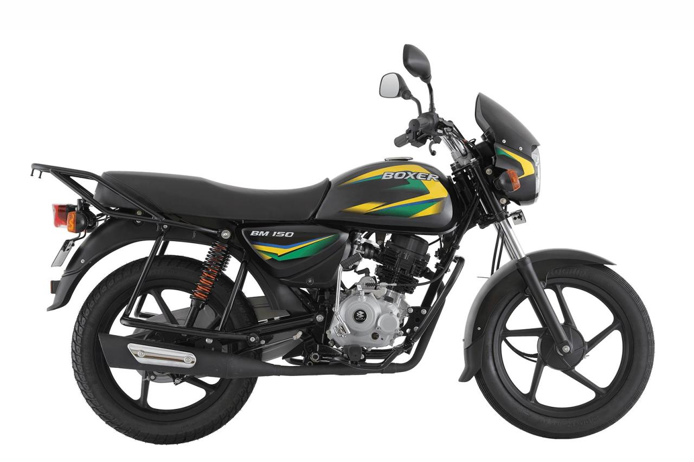
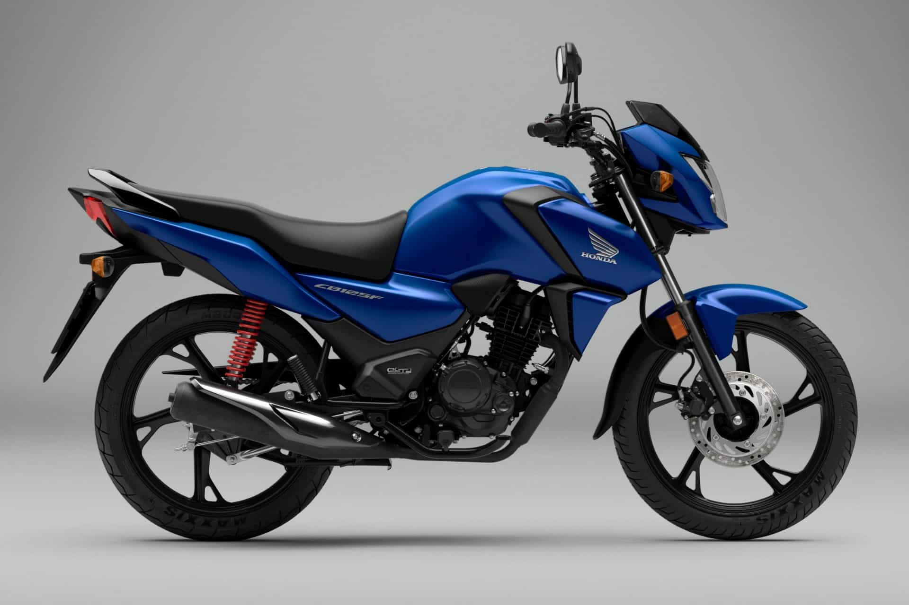

Velocidad y Espíritu: Tu Bitácora Motera Definitiva
Aquí, en 'El Rincón del Motero', nos apasionan las motos como a ti. Si buscas datos reales sobre modelos, comparativas honestas o consejos prácticos para manejar con cabeza, ¡estás en el sitio correcto!. Además, conéctate con otros moteros y comparte esas historias de carretera que solo nosotros entendemos. Prepárate para vivir cada kilómetro al máximo.
Motos Deportivas:
Yamaha YZF-R6

- Cilindrada: 599 cc
- Motor: 4 cilindros en línea, DOHC, refrigerado por líquido
- Potencia: 118 hp @ 14,500 rpm
- Torque: 61.7 Nm @ 10,500 rpm
- Velocidades: 6 marchas
- Capacidad de tanque: 17 L
Es una supersport icónica, con un desempeño de pista brutal y confiabilidad Yamaha. Perfecta si buscas adrenalina pura.
Kawasaki Ninja ZX-6R

- Cilindrada: 636 cc
- Motor: 4 cilindros en línea, DOHC, refrigerado por líquido
- Potencia: 127 hp @ 13,500 rpm
- Torque: 70.8 Nm @ 11,000 rpm
- Velocidades: 6 marchas
- Capacidad de tanque: 17 L
Tiene más torque que la R6, lo que la hace más versátil para ciudad y carretera. Además, incorpora asistencias electrónicas (ABS, modos de conducción).
Motos para el Trabajo
Bajaj Boxer BM150
- Cilindrada: 144.8 cc
- Motor: 1 cilindro, SOHC, refrigerado por aire
- Potencia: 12 hp @ 7,500 rpm
- Torque: 12.26 Nm @ 5,000 rpms
- Velocidades: 4 marchas
- Capacidad de tanque: 11 Ls
Es una moto de batalla: barata de mantener, con repuestos en todos lados y perfecta para delivery, mensajería o transporte diario.
Honda CB125F
- Cilindrada: 124.7 cc
- Motor: 1 cilindro, OHC, refrigerado por aire
- Potencia: 10.7 hp @ 7,500 rpm
- Torque: 10.2 Nm @ 6,000 rpm
- Velocidades: 5 marchas
- Capacidad de tanque: 11 L
Es la moto más confiable para trabajo urbano. Consumo de combustible muy bajo, fácil de mantener y con la durabilidad Honda.
Recomendaciones para Moteros
- Usa siempre casco certificado y ropa adecuada (chaqueta, guantes, botas).
- Haz mantenimiento regular a tu motocicleta: frenos, llantas, luces y aceite.
- Respeta los límites de velocidad y señalización vial.
- Evita manejar con fatiga o bajo efectos de alcohol.
- Capacítate con cursos de manejo defensivo.
Disposiciones Legales en Perú
En Perú, existen disposiciones específicas sobre el uso de motocicletas que buscan garantizar la seguridad vial y prevenir delitos:
- Uso obligatorio de casco certificado para conductor y pasajero.
- Uso de chaleco reflectante con número de placa en ciertas jurisdicciones.
- Prohibición de llevar más de un pasajero en zonas con alta incidencia delictiva.
- Restricciones en circulación en algunas vías o horarios.
- Matrícula visible y luces en buen estado.
Experiencias de Moteros
Carlos, Lima
"Mi Bajaj Boxer me ha acompañado por más de 5 años. Económica, resistente y perfecta para mi trabajo diario como repartidor."
Sandra, Arequipa
"La Ninja ZX-6R es mi escape de los fines de semana. No hay nada como sentir la velocidad en la Panamericana Sur."
Luis, Trujillo
"Una caída me hizo valorar la importancia del equipo de protección. Ahora no salgo sin guantes ni chaqueta con protecciones."